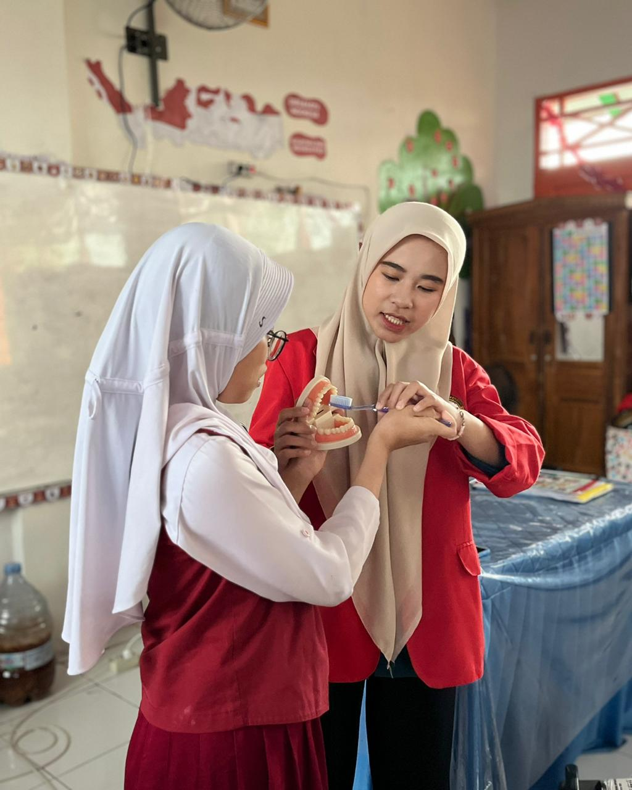

BIODATA DIRI
Siti Adhylah Umihany Polanunu
Saya adalah seorang mahasiswa Program Studi Sarjana Terapan Terapi Gigi yang sedang menempuh pendidikan di Universitas Hasanuddin. Saya memiliki ketertarikan pada bidang kesehatan gigi dan mulut, khususnya yang berkaitan dengan upaya promotif dan preventif dalam perawatan gigi. Selain itu, saya juga aktif dalam kegiatan akademik dan praktik keterampilan klinik yang membantu mengembangkan kemampuan komunikasi, keterampilan klinis, dan pelayanan kepada pasien. Melalui pendidikan yang sedang saya jalani, saya berharap dapat menjadi tenaga kesehatan yang profesional, bertanggung jawab, dan bermanfaat bagi masyarakat.